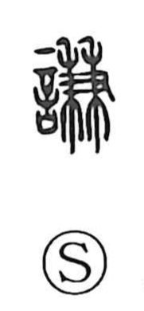

謙

Uncategorized
Kun: herikudaru | On: ken
modesty ・ humility ・ to yield ・ to refrain
Explanation
A phono-semantic character with 兼 as its phonetic core. The graph 兼 shows two rice stalks grasped together in a hand—an image suggestive of an action one would prefer to avoid. From this idea of holding back and steering clear, 謙 comes to mean yielding, refraining or waiting, avoiding, and acting with care and moderation. The Book of Changes’ Hexagram Qian (Modesty) celebrates this virtue—“Heaven’s way lessens the full and increases the modest”—a sentiment echoed by Laozi and Zhuangzi, who value the humble over the arrogant. 謙 thus names the self-effacing restraint prized in conduct and speech.